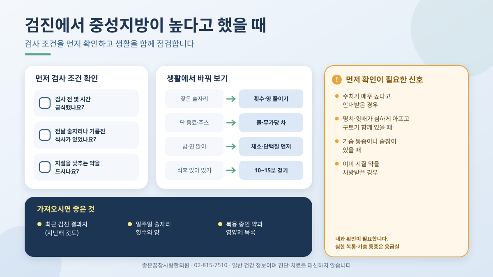
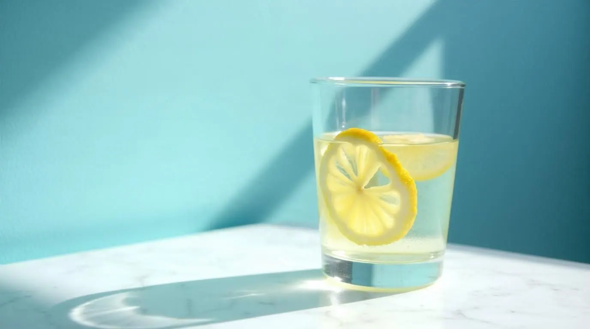

건강검진에서 중성지방이 높게 나오면 검사 전 금식과 전날 음주를 먼저 확인하고 술, 단 음식, 체중, 활동량을 점검하며 재검과 내과 진료를 함께 안내하고 복용 약은 임의로 중단하지 않습니다.
여쭙는 것
- 검사 전에 몇 시간 금식했나요? 전날 술자리나 기름진 식사가 있었나요?
- 술과 단 음료, 간식은 일주일에 얼마나 드시나요?
- 최근 체중이나 허리둘레가 늘었나요?
생활에서 해 볼 것
- 술자리 횟수와 한 번에 마시는 양부터 줄이기
- 단 음료와 과일주스를 물이나 무가당 차로 바꾸기
- 밥과 면의 양을 조금 줄이고 채소·단백질을 먼저 먹기
한의원에서 함께 살필 것
- 기름진 식사와 술자리가 잦아 몸이 무겁게 느껴지는 경우 식습관과 활동 리듬을 함께…
- 검진 수치가 신경 쓰여 생활을 바꾸고 싶은 경우 식사 구성과 걷기 습관을 함께 정합…
- 피로와 식후 졸림이 함께 있는 경우 수면과 소화 상태를 살핍니다.
먼저 확인이 필요한 신호
- 수치가 매우 높다고 안내받은 경우
- 명치나 윗배가 심하게 아프고 구토가 함께 있는 경우
- 가슴 통증이나 숨참이 있는 경우

검진 결과지에 중성지방이 높다고 적혀 있으면 놀라기 쉽습니다. 중성지방은 검사 전 식사와 음주에 영향을 많이 받는 항목이라, 먼저 검사 조건을 확인하고 술·단 음식·활동 같은 생활을 함께 점검합니다. 수치의 해석과 약 처방은 내과 진료를 따릅니다.
왜 이런 불편이 생길 수 있나요
- 검사 전 충분히 금식하지 않았거나 전날 술과 기름진 음식을 먹으면 높게 나올 수 있습니다.
- 술과 단 음료, 밥·면·빵 같은 탄수화물을 많이 먹는 습관과 관련될 수 있습니다.
- 체중, 특히 뱃살이 늘고 활동이 줄면 함께 오르는 경우가 많습니다.
- 혈당 문제나 갑상선·신장 질환, 일부 약과 함께 나타나기도 해 내과 확인이 필요합니다.

먼저 이렇게 여쭙니다
- 검사 전에 몇 시간 금식했나요? 전날 술자리나 기름진 식사가 있었나요?
- 술과 단 음료, 간식은 일주일에 얼마나 드시나요?
- 최근 체중이나 허리둘레가 늘었나요?
- 지질을 낮추는 약이나 다른 약을 드시나요?
일상에서 먼저 해 볼 수 있는 것
- 술자리 횟수와 한 번에 마시는 양부터 줄이기
- 단 음료와 과일주스를 물이나 무가당 차로 바꾸기
- 밥과 면의 양을 조금 줄이고 채소·단백질을 먼저 먹기
- 식후 10~15분 가볍게 걷기를 꾸준히 하기
- 다음 검사는 안내받은 금식 조건을 지켜 받기

한의원에서 함께 살필 수 있는 경우
- 기름진 식사와 술자리가 잦아 몸이 무겁게 느껴지는 경우 식습관과 활동 리듬을 함께 살핍니다.
- 검진 수치가 신경 쓰여 생활을 바꾸고 싶은 경우 식사 구성과 걷기 습관을 함께 정합니다.
- 피로와 식후 졸림이 함께 있는 경우 수면과 소화 상태를 살핍니다.
좋은꿈참사랑한의원에서는 검진 결과지를 함께 보며 식사·음주·잠 이야기를 먼저 듣습니다. 진맥을 기본으로 하고 필요하다고 판단될 때 인바디 770으로 체성분을 확인하고 설진·복진으로 몸 상태를 살핀 뒤, 생활 계획과 침·한약 상담 등을 상태에 맞춰 정합니다. 수치의 진단과 약 조절은 내과에서 받도록 안내합니다.
예를 들어 이런 경우가 있습니다
- 예를 들어 회식이 잦은 시기에 검진을 받았고 전날에도 술자리가 있었던 경우, 수치만으로 걱정하기보다 금식 조건을 지켜 다시 확인할지 검진 기관이나 내과와 상의해 볼 수 있습니다.
- 예를 들어 술은 거의 마시지 않지만 빵·면·단 음료를 자주 먹고 활동이 적은 경우, 탄수화물과 음료 쪽을 먼저 살피고 식후 걷기를 더해 보는 것이 출발점이 될 수 있습니다.
- 예를 들어 체중은 그대로인데 허리둘레가 늘었다면, 인바디 770으로 체지방과 근육의 변화를 함께 기록해 두고 다음 검진 결과와 비교해 볼 수 있습니다.

자주 하는 오해
- 기름진 음식만 줄이면 된다고 생각하기 쉽지만, 술과 단 음료, 밥·면·빵 같은 탄수화물도 중성지방과 관련될 수 있습니다.
- 마른 체형이면 중성지방은 걱정하지 않아도 된다고 여기는 분도 있지만, 체중과 상관없이 생활 습관과 다른 질환에 따라 높게 나올 수 있습니다.
- 한 번 높게 나왔으니 바로 약을 먹어야 한다고 걱정하시기도 하지만, 검사 조건을 먼저 확인하고 재검사와 약 처방 여부는 내과와 상의하시면 됩니다.
스스로 점검해 보세요
- 검사 전 안내받은 시간만큼 금식했다
- 검사 전날 술을 마시지 않았다
- 일주일 술자리 횟수와 한 번에 마시는 양을 알고 있다
- 단 음료나 과일주스를 하루 한 잔 이하로 마신다
- 밥·면·빵 같은 탄수화물을 한 끼에 두 가지 이상 겹쳐 먹지 않는다
- 하루 30분 정도 걷는 날이 일주일에 3일 이상이다
- 지난해 검진 결과와 비교해 본 적이 있다
해당하지 않는 항목이 많다고 걱정하실 필요는 없습니다. 그중 바꾸기 쉬운 한두 가지를 골라 몇 주 이어 가 보고, 그 기록을 진료 때 함께 보시면 다음에 바꿀 것을 정하기가 수월해집니다.

얼마나 지켜보고 언제 상담할까요
- 술과 음료, 탄수화물을 조정한 뒤 몇 주에서 몇 달 단위로 꾸준히 이어 가며 기록해 보세요.
- 재검사 시기와 약 처방 여부는 내과의 안내를 따르세요.
- 생활을 바꾸고 싶은데 무엇부터 할지 정하기 어렵다면 상담을 받아 보셔도 좋습니다.
- 수치가 매우 높다고 안내받았거나 심한 윗배 통증과 구토가 있다면 기다리지 말고 내과나 응급실을 먼저 찾으세요.
처음 오시면 이런 순서로 진료합니다
첫 방문에서는 검진 결과지와 지난해 결과를 함께 보며 술자리, 음료, 식사, 잠 이야기를 먼저 듣습니다. 이어서 모든 분께 그렇듯 맥부터 짚고(진맥), 필요하다고 판단될 때 혈액 검사기나 인바디 770으로 지금의 흐름을 확인합니다. 그 뒤 술자리와 음료, 식후 걷기처럼 먼저 바꿀 것의 순서를 함께 정하고, 침·한약 상담은 복용 중인 약을 확인한 뒤 정합니다. 수치의 진단과 약 조절은 내과에서 받도록 안내하며, 다음 진료에서는 지난번 정한 것을 어떻게 지내셨는지 이어서 여쭙습니다.

이렇게 기록해 오시면 상담이 쉬워집니다
- 최근 건강검진 결과지(가능하면 지난해 결과도)
- 일주일 동안의 술자리 횟수와 양
- 자주 마시는 음료와 간식
- 복용 중인 약과 영양제 목록
이런 증상은 먼저 확인이 필요합니다
- 수치가 매우 높다고 안내받은 경우
- 명치나 윗배가 심하게 아프고 구토가 함께 있는 경우
- 가슴 통증이나 숨참이 있는 경우
- 이미 지질 약을 처방받은 경우
복용 중인 약은 처방한 의사와 상의 없이 줄이거나 끊지 않습니다. 심한 복통이나 가슴 통증이 있으면 바로 응급실을 찾으세요.

관련 글
- 콜레스테롤과 중성지방 수치가 높게 나오면 생활에서 무엇부터 보나요?
- 건강검진 혈액검사 결과지를 가져가면 무엇을 같이 보나요?
- 연말 회식을 하고 나면 며칠씩 속이 불편한 이유는 무엇인가요?
한눈에 보는 표
| 구분 | 핵심 |
|---|---|
| 여쭙는 것 | 검사 전에 몇 시간 금식했나요? 전날 술자리나 기름진 식사가 있었나요? 술과 단 음료, 간식은 일주일에 얼마나 드시나요? |
| 생활에서 해 볼 것 | 술자리 횟수와 한 번에 마시는 양부터 줄이기 단 음료와 과일주스를 물이나 무가당 차로 바꾸기 |
| 한의원에서 함께 살필 것 | 기름진 식사와 술자리가 잦아 몸이 무겁게 느껴지는 경우 식습관과 활동 리듬을 함께 살핍니다. 검진 수치가 신경 쓰여 생활을 바꾸고 싶은 경우 식사 구성과 걷기 습관을 함께 정합니다. |
| 먼저 확인이 필요한 신호 | 수치가 매우 높다고 안내받은 경우 명치나 윗배가 심하게 아프고 구토가 함께 있는 경우 |
자주 묻는 질문
중성지방이 높으면 한의원 진료로 해결되나요?
한의원 진료는 내과 진료나 약을 대신하지 않습니다. 생활 리듬을 함께 살피고 필요하면 재검사와 내과 진료를 안내합니다.
전날 술을 마시고 검사했는데 다시 해야 하나요?
금식과 음주가 결과에 영향을 줄 수 있어 재검 여부는 검진 기관이나 내과와 상의하세요.
처음 갈 때 무엇을 가져가나요?
최근 건강검진 결과지와 복용 중인 약 목록을 가져오시면 상담이 빨라집니다.
이 글은 일반적인 건강 정보이며 개인의 진단이나 치료를 대신하지 않습니다. 증상이 있거나 복용 중인 약이 있다면 진료를 통해 확인하세요. 치료 효과는 개인마다 다를 수 있습니다.
작성 기준: 일반적으로 알려져 있는 건강 정보를 참고해 정리했습니다(대표원장 감수). 증상 기록은 1~2주 동안 하루 1회, 비슷한 시간에 적어 오시면 지난 상태와 비교하기 쉽습니다.
좋은꿈참사랑한의원은 재진 때 지난번 이야기부터 이어서 여쭙니다. 진료시간과 예약은 오시는 길에서 확인하세요.